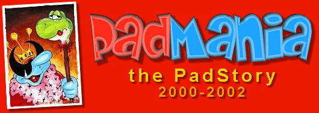
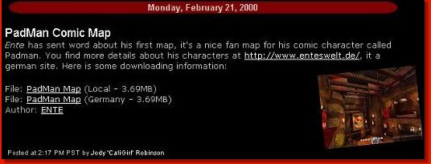
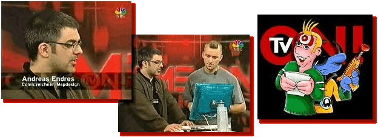
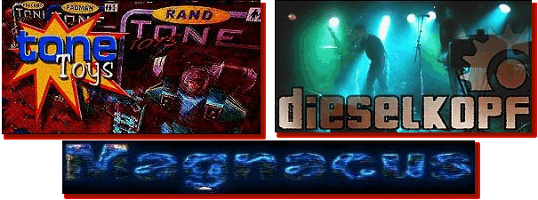
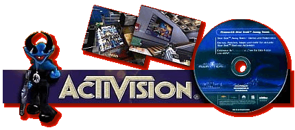
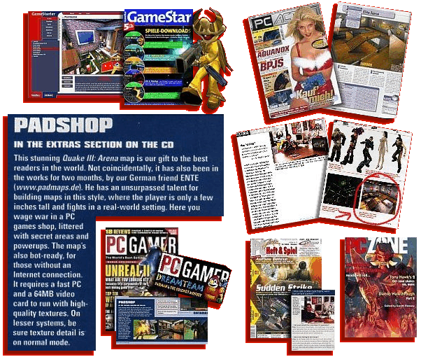

Padman und "Beben3" - Wie alles begann
Zwischen 2000-2002 waren die PadMaps beinahe in aller Quaker-Munde und in der Zwischenzeit ist in der
PadWorld wirklich so einiges passiert. Doch wie kam es eigentlich zu den PadMaps, wie fing diese ganze
Sache an..? Es war Ende 1999, als ENTE zum ersten Mal ein Multiplayer Game in den Händen hielt. Naja,
eigentlich waren es zwei Games und zwar Quake3 und Unreal Tournament, welche damals beinahe zeitgleich
erschienen. Obwohl ENTE natürlich vorher schon Games gespielt hatte, musste er gestehen, dass ihn der
Multiplayer-Part vorher nie interessierte. ENTE zockte immer nur den Singleplayer und war sich gar
nicht bewusst, was ihm da so im Multiplayer entging. Doch bei Quake3 und auch UT änderte sich dieses,
denn es gab keinen Singleplayer im üblichen Sinne. Der Funke war schnell übergesprungen und unser
Federvieh liebte es mit Freunden ein Match nach dem anderen auszutragen...Online spielte er die Games
übrigens damals noch nicht. Zu seiner großen Verwunderung stellte er dann auch noch fest, dass es da
Leute gab, welche ihre ganz eigenen Maps und Modelle erstellten und so fragte er sich, wie die das
machen. Vor allem wollte ENTE wissen, wie man denn so ein Spielermodel erstellt, da er gerne eine
seiner Comicfiguren als Spielmodel hätte. Dieses sollte natürlich sein Padman sein, welcher zu diesem
Zeitpunkt seine Auftritte im deutschsprachigen Konsolen-Magazin "PSG" hatte. Also machte ENTE sich auf
die Suche nach entsprechenden Tutorials und Tools, mit denen man solche Modelle erstellen kann, so
schwer kann das ja nicht sein, dachte er sich damals. Schnell durfte er aber feststellen, dass es doch
nicht so einfach ist, dass es kaum Tutorials gibt und dass die Programme, zum erstellen dieser
Playermodelle, recht teuer sind. Unverschämt wie ENTE manchmal sein kann, fragte er kurzerhalb ein
paar bekannte Modeller, ob diese ihm nicht schnell mal den PadMan umsetzen könnten...doch niemand
schien Interesse zu haben. "Wrath", der damals das bekannte "Harlequin" Model (bekannt aus Batman) für
Quake3 erstellte, das ENTE überhaupt erst auf die Idee mit dem eigenen Playermodel brachte, meinte
dann in seiner Antwort, auf ENTE's Anfrage, dass niemand ihm ein Model erstellen würde von einer
Figur, die im Grunde kein Schwein kennt. Tja, da hatte Wrath natürlich recht und genau das war dann
der Auslöser...hier sagte sich ENTE, ok, dann musst du Padman eben bekannt machen...;) Wärend er bei
der Suche nach entsprechenden Tutorials für Playermodelle zwar erfolglos blieb, vielen ihm stattdessen
ein paar Tutorials zum Mappen in die Hände. Dabei erblickte er auch ein paar UT Tutorials, doch kam
ihm dieses viel komplizierter vor und so gab er schon nach kurzer Zeit auf. Anders bei Quake3, da
hatte er innerhalb kürzester Zeit einen ersten Raum erstellen können und war von da an wie besessen.
Eine große Hilfe war der gute "Dangerzone", der damals sein erstes kleines, deutschsprachiges Tutorial
geschrieben hatte. ENTE musste anfangs einige Rückschläge hinnehmen, nichts wollte wirklich klappen.
Immer wieder nervte er den armen "Dangerzone" mit Fragen, obwohl dieser ja selber noch dabei war, die
Materie zu erforschen. Doch irgendwann war es so weit, die erste Map wurde vollendet, auch wenn Diese
ganz anders aus als erhofft...hehe... Um nun auch Padman bekannter zu machen, kam ENTE auf die Idee,
einfach ein paar Padman Motive in die Map zu packen und die Map "PadCastle" zu nennen...;)

Und los ging es!
Im Februar 2000 schickte ENTE sein Werk an alle ihm
bekannten Quake3 Seiten und zu seiner Freude haben dann auch gleich allen Seiten etwas nettes dazu
geschrieben. Sogar die ganz großen Seiten brachten es und so gehörten z.B. "CaliGirl" von
quake3world.com und "Pappy-R" von planetquake.com zu den ersten PadMap-Fans (noch heute wird die
PadWorld von planetquake.com gepuscht, die liebe "jube" sorgt schon dafür, dass man uns nicht
vergisst). Auf den deutschen Seiten waren es "Wolle" von quake.de und "Forlani", sowie "3nzo" von
planetquake.de, welche die PadMaps immer unterstützten. Ohne diese lieben Leutz wären die PadMaps
wahrscheinlich nie so erfolgreich gewesen. PadCastle, die erste Map aus ENTE's Hand, kam dann auch
richtig gut an, obwohl die Map spielerisch nicht gerade der Hammer war, gefiel den Leuten dieser Mix
mit den Comic Motiven und den kleinen Details, die ENTE so einbaute. Es war also klar, dass eine
zweite Map entstehen musste, die ENTE dann bequemerweise aus den Resten von PadCastle erstellte. Denn
eigentlich wollte ENTE damals eine große Ritterburg erstellen, doch kam er einfach noch nicht so
richtig mit dem Q3-Editor zurecht und musste die Map immer wieder umgestalten und immer wieder
verkleinern...da blieb dann genug übrig für eine zweite Map...;) Obwohl er dann am Ende mit dem
Eegebnis, der PadHome, ein wenig unglücklich war, wurde dieses die erste "Map of the Week" auf
quake3world.com. "CaliGirl" liebte den grünen Rasen in dieser Map..*g* Damit war dann wahrscheinlich,
ganz unbewusst, auch der Grundstein zu ENTE's farbenfroher Art, wie wir sie heute aus seinen Maps
kennen, gelegt worden.

Der erste Schritt in eine neue Richtung
Nach PadCastle und PadHome stellte ENTE fest, dass
diese Gothic Maps einfach nichts für ihn sind. Er mochte keine weiteren Maps im Gothic Stil erstellen
und er wollte seine PadMan Bilder irgendwie noch besser päsentieren. So kam er auf die Idee eine Art
Museum zu "basteln", eine PadGallery. Zum ersten Mal verzichtete er auf die Gothic Texturen und baute
eine Map fast ausschließlich mit eigenen Texturen. PadGallery war dann auch die erste Map, die
reibungslos über die Bühne ging, ohne Frustkämpfe mit dem Editor auszutragen. So schusterte ENTE das
Teil innerhalb von nur einer Woche zusammen...*g* Aber dann, als er die Map abermals überall
verbreiten wollte, wurde ihm von planetquake.com mitgeteilt, dass er die Map so nicht puschen könne,
da schließlich auch Kinder das Game spielen würden. Grund des Anstoßes war damals die Erotic-Galerie
mit einigen recht harmlosen Motiven, wie wir Europäer wohl meinen würden. So kam es jedenfalls, dass
auch eine entschärfte Version für den amerikanischen Markt erstellt wurde und es somit zwei
PadGallerys gab..;) Mit der PadGallery ging ENTE einen komplett anderen Weg und viel daher natürlich
auch gleich auf damit. Doch auch wenn die PadGallery damals für jede Menge Aufmerksamkeit sorgte, so
war es dann erst die vierte Map aus seiner Hand, welche die PadMaps so richtig "bekannt" machen
sollte...doch dazu später mehr. PadGallery gab ENTE noch einmal die Chance, es erneut mit dem Padman
Player-Model zu versuchen. Er fragte dann im Grunde nur eine Person und zwar den "tone" aus
Australien. Der Grund dafür war eigentlich nur, dass Dieser irgendwo mal schrieb, wie sehr er Comics
möge...;) Die Antwort jedenfalls ließ nicht lange auf sich warten, denn wie sich herausstellte, stand
auch "tone" auf die PadMaps. "tone" sagte sofort zu und machte sich gleich an die Arbeit, doch es
sollten noch viele Wochen vergehen, bis PadMan endlich das virtuelle Laufen erlernte. ENTE hatte sein
Ziel erreicht, endlich sollte er seinen Padman bekommen. Aber sollte er nun auch mit dem Mappen
aufhören, nein, denn jetzt ging es doch erst richtig los...:)

PadGarden
Irgendwann zu dieser Zeit, tauchte jemand mit einer
ersten Q3A Lilliput Map auf, die den Namen "Runtfest" trug. ENTE kann sich noch gut darann erinnern,
wie Dangerzone und er sich oft über diese Map unterhalten hatten, dass sie Diese wirklich witzig
fanden. Doch das war es auch schon, weiter hatte sich ENTE nicht mit diesem "Lilliput" Thema befasst.
Er plante etwas ganz anderes, er wollte eine Art Kaufhaus als Map erstellen, ein nettes PadCenter
halt. Erst als jemand seine Beta zu einer Badezimmer Lilliput Map präsentierte und ENTE bat, diese Map
einmal zu betrachten, sprang der Funke über. Leider war es so, dass man sich damals dem Schöpfer
dieser Badezimmer Map ziemlich mies gegenüber verhalten hatte, in übelst beschimpfte und mit bösen
Mails bombardierte. Man bezeichnete ihn einfach als Ideenklauer, als "Runtfest" Nachmacher. Es wurde
damals so schlimm, dass der Arme die Badezimmer Map nicht mehr fertig stellte und sogar seine
Mailadresse änderte...:( ENTE hatte sich aber dann trotzdem dazu entschlossen, es mit einer eigenen
Lilliput Map zu versuchen und zwar mit der "PadGarden". Als ENTE dann mit dieser Map an die
Öffentlichkeit ging, gab es merkwürdigerweise weder unerfreuliche Mails noch sonstige böse Kommentare.
Ganz im Gegenteil sogar, PadGarden schlug ein wie eine Bombe. Mit der PadGarden sollte sich alles
ändern, es begann die eigentliche "PadMania"...;) Lustigerweise wurde ENTE seit dem nur noch als
Lilliput Mapper bezeichnet. Man hat seit dem den Namen PadMap einfach mit Lilliput-Map gleich gesetzt
und erwartete auch nichts anderes mehr von ENTE. Egal wieviele "normal" groß gestaltete Maps ENTE auch
schon erstellte oder noch erstellen sollte, ENTE war nun der Lilliput-Mapper.
Der Wahnsinn begann!
Plötzlich waren die PadMaps in aller Munde, man
überschwemmte ENTE mit einer E-Mail-Flut. Ob aus der Schweiz, Australien, Amerika, Korea, Taiwan,
England oder, oder....von überall flatterten E-Mails in seine Box. Man führte Interviews mit ihm und
brachte Berichte zu seinen Arbeiten. Alle möglichen Magazine präsentierten etwas zu den PadMaps,
lieferten die PadMaps auf Cover-CDs oder baten gar um eine hauseigene PadMap. So wurde ENTE vom
amerikanische "PC Gamer" Magazin gebeten, ihnen eine PadMap zu erstellen. Woraus die "PadShop"
entstand. Ein englisches Magazin nahm ein Interview über Digi-cam mit ihm auf und das, obwohl ENTE
weder gut englisch verstand noch sprechen konnte. "Activision Deutschland" baten ENTE, ihnen exclusive
Versionen seiner EF Maps zu erstellen, damit man diese auf einer Promo-CD packen könne.

Und als er mal einen PadMan Skin Contest veranstaltete, erklärte sich sogar ein Paul Jaquays (damals
noch bei id) bereit, mit in der Jury zu sitzen. Kenn Hoeckstra von "Raven" schrieb ihm, wie cool er es
fände, dass er nun auch für EF Maps mache. Eine deutsche Game Show lud ENTE zu einem TV Interview ein
und und und... Es war wirklich eine verrückte Zeit, an welche ENTE sich gerne zurück erinnert. Als er
für den "Q3A-EntenClan" die Map "PadPool" erstellte, lernte er den guten Magnacus kennen, der seit dem
dafür sorgte, dass es einen Server mit den PadMaps gab (PadHouse). Ihm hat er natürlich auch die
damaligen PadForen zu verdanken. Und als ENTE mitten in der Arbeit zur "PadSpace" steckte, welche
eigentlich auch als Auftragsmap begann, schickte ihm ein "alter" Schwede namens Ronny eine CD nach
Hause. Auf dieser CD befand sich die Musik seiner Band "Dieselkopf", welche von da an auch immer
wieder die Padmaps mit Musik untermalten. Doch es ging noch weiter...

Angebote zum Leveldesigner
Ja, Diese gab es und zwar nicht nur einmal. Angebote
aus England und Deutschland flatterten in ENTE's Mailbox. Mal waren die Anfragen sehr ausführlich und
machmal kurz und bündig, wie z.B. die auf dem unteren Shot..;) Tja, warum hat ENTE dann heute keinen
Job in der Game-Industrie, wenn er doch angeblich so viele Angebote bekam, werdet Ihr euch bestimmt
fragen. Darauf kann man nur antworten, weil dat ENTE blöde ist und feige war...;) Anfangs hatte ENTE
tatsächlich die Angebote direkt abgelehnt, ohne groß darüber nach zu denken. Er hatte einfach die
Hosen voll, sagte sich, Du bist nicht gut genug, fühlte sich zu Alt, verstand kaum Englisch und so
weiter. Per Mail war das Absagen ja recht einfach, doch dann rief man ihn auch noch an, welch Qual
(*gg*). Ihm blieb nichts anderes übrig, als sich den Anfragen zu stellen. Man beschnupperte sich,
sprach sogar von einem eventuellen PadGame, dass man sich vorstellen könnte bei Zeiten. Doch dann
sagte ENTE wieder "Nein" und wie er gestehen muss, hat er sich da das erste Mal selber in den Hintern
getreten, als er "drei Brüdern" den Rücken zuwandte. Es ergab sich dann kurze Zeit später eine weitere
Chance, wieder war man interessiert und man lud ENTE sogar auf einen Besuch ein. Diesesmal sagte er
dann auch nicht gleich wieder Nein, sondern setzte sich in den Zug und schaute sich an, was denn da so
entstehen sollte. Das Team stellte sich als unglaublich sympathisch herraus und ENTE sagte
tatsächlich, unter Vorbehalt zu. Es gab nur noch ein Engine Problem, man hatte zwar schon mit der
Arbeit an dem Game begonnen, doch man überlegte, ob man die Engine wechseln solle. So verblieb man,
dass ENTE erst hinzu komme, wenn die Entscheidungen bezüglich der Engine gefallen seien. Ok, dachte
ENTE sich und konnte es kaum erwarten, los zu legen. Einige Wochen später kam ein weiteres, verdammt
gutes Angebot einer deutschen Schmiede, welche ihn schon einmal gebeten hatte, dass er bei ihnen
einsteigen möge. Doch er musste denen leider mitteilen, dass er nun einem anderen Team zugesagt hatte.
Anschließend wartete ENTE und wartete, er wartete, dass sich das andere Team endlich bei ihm melden
möge...dass er endlich loslegen könne, doch nichts geschah. Irgendwann, durch Zufall, sah er dann eine
News zu diesem Projekt, in welcher es auch neue Infos und Screenshots gab. Man hatte also ohne ihn
angefangen, ihn nicht mehr kontaktiert und sich auch später nie mehr dazu geäussert. Tja, so kann es
gehen...ENTE versuchte dann noch einmal, bei dem Team unter zu kommen, welchem er absagte, doch
scheinbar wollten diese dann auch nicht mehr, bzw. hatten ihr Team wohl schon komplett... der Zug war
abgefahren.
Und dann...?
Nachdem er die PadMod ins Leben rief und sich somit
etwas zurück zog aus der Quake3-Szene, also auch keine regelmäßigen PadMaps mehr ablieferte, wurde es
nach und nach stiller...die PadMania war erloschen. Zwei Jahre dauerte der Höhenflug, zwei Jahre
standen viele Türen offen, zwei Jahre lang lebte ENTE in einer ganz anderen Welt. Er fühlte sich
manchmal wie so ein kleiner König, wie er gestehen musste..;) Doch dann lieferte er nichts Neues mehr
und die alte PadWorld Site wurde eingestellt. ENTE hatte diese zwei Jahre wirklich genossen, doch ihm
war immer klar, dass diese "PadMania" auch einmal vorrüber sein würde. Manchmal fragt er sich aber
schon, warum er sich "damals" soviel Arbeit mit den PadMaps gemacht hatte, warum er sich so sehr auf
diese ganze Sache einließ, denn schon jetzt, wenige Jahre danach, entdeckt er in diversen Foren immer
häufiger mal die Frage; "Was sind denn PadMaps..?". Unwissende CS'ler, welche die Maps heute das erste
Mal erblicken, rufen gleich, "Rats-Maps"-Plagiate und für die neuen Quaker, die die Zeit damals nicht
mitmachten, sind das einfach nur noch Kiddy-Maps, nicht Wert betrachtet zu werden. So ist das nunmal,
das ist der Lauf der Zeit...doch damals, das war eine verdammt schöne Zeit! Wer Diese mitgemacht hat,
mag sich hoffentlich noch gerne daran erinnern.
Von ENTE herzliche Grüße an all die alten
PadMaps Zocker!